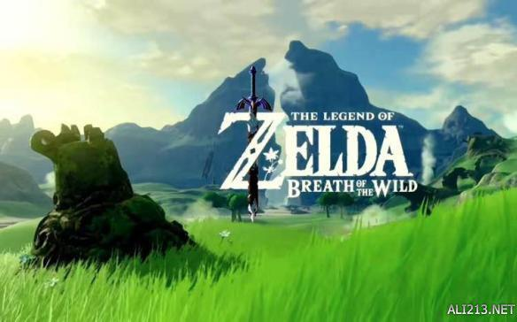
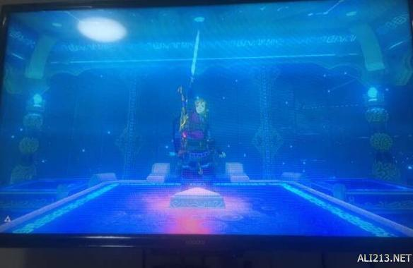
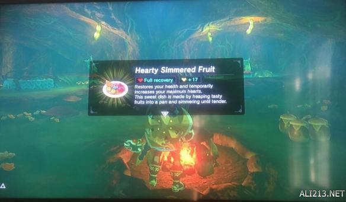
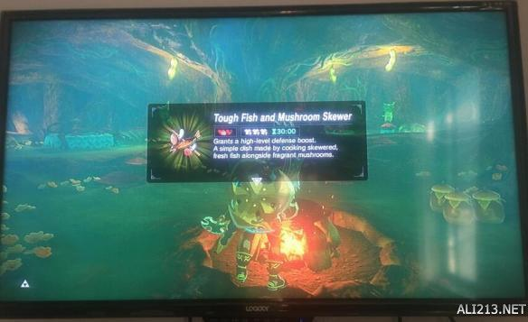
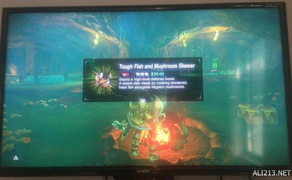
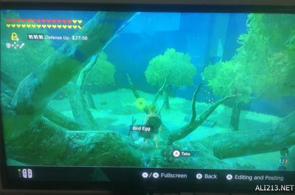

今天给大家带来的是“kyo_舜”分享的塞尔达传说荒野之息dlc大师模式剑之试炼初级通关攻略，还没开始玩dlc的玩家们快来看看怎么玩吧。
dlc大师模式剑之试炼初级通关攻略




从最基本的说起，你首先需要这两个食材，吃掉以后，再进试炼，其次你需要把所有技能升到满级，这也是基础。
第一层，不知道说什么。。


三只哥布林，用炸弹遛狗即可轻松获胜，注意 这里树上有两颗鸟蛋。
第二层，有两个弓兵，两个步兵，我的打法是先解决掉右边的弓兵，然后再清理剩下的，三只哥布林，从树上飞过去炸下来就行，或者搞偷袭，12攻可以秒。